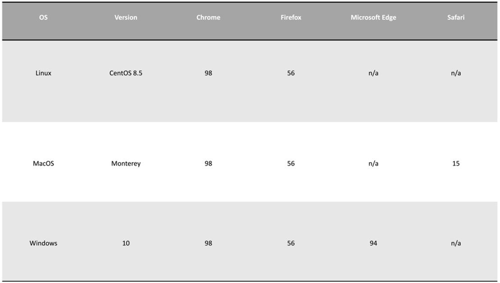
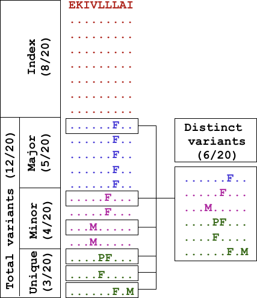
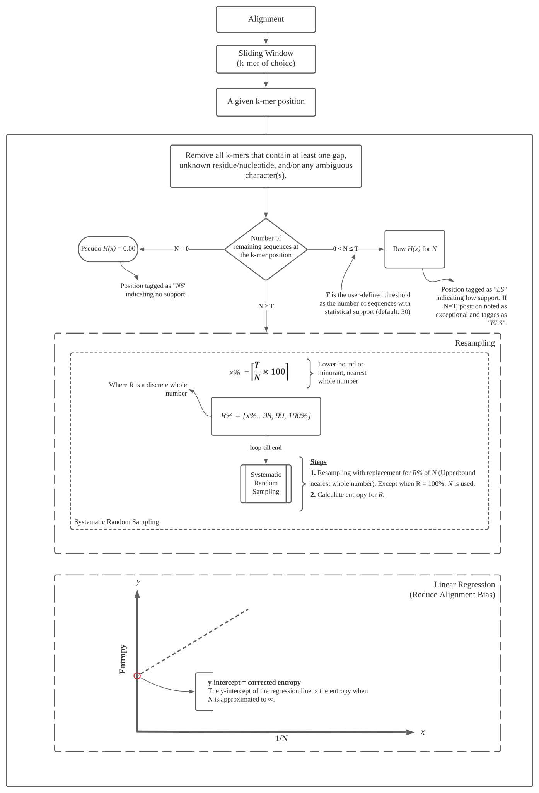
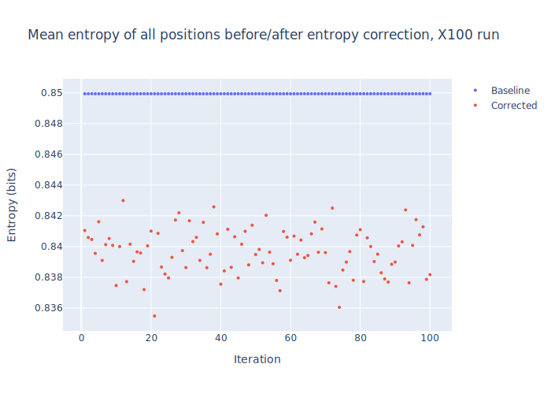
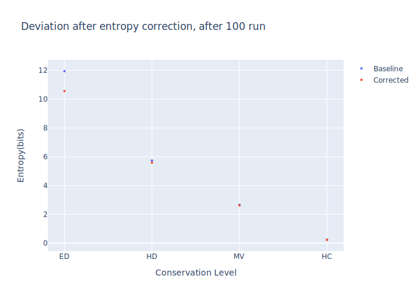

Welcome to DiMA User Manual
1. About
1.1. Sequence Diversity Dynamics Analyser for Viruses (DiMA)
Viral infectious diseases are a major public health threat. Sequence diversity is one of the major challenges in the design of diagnostic, prophylactic and therapeutic interventions against viruses. The diversity can be an outcome of a combination of underlying evolutionary processes (mutation, recombination, and assortment). A continuing goal is a greater understanding of viral proteome sequence diversity, the dynamics of substitutions, and effective strategies to overcome the diversity for drug or vaccine design.
Herein, we present Diversity Motif Analyser (DiMA), a tool designed to facilitate the quantification and dissection of viral sequence diversity dynamics. DiMA provides a quantitative measure of sequence diversity by use of Shannon’s entropy (PMID: 18698358), applied via a user-defined k-mer sliding window to a protein alignment. Additionally, DiMA further interrogates the diversity by dissecting the entropy at each aligned k-mer position to various diversity motifs (PMIDs: 32518710, 23593157), based on the incidence of distinct k-mer sequences at the position. At a given position, index is the predominant sequence and all other distinct k-mers are referred to as total variants to the index, sub-classified into major variant (the most common variant), minor variants (comprising of k-mers with incidence lower than major and higher than unique), and unique variants (k-mers seen only once in the alignment). Moreover, the description line of the sequences in the input alignment can be enriched for inclusion of meta-data as part of the analysis, such as spatio-temporal information, among others. DiMA outputs a JSON file that provides multiple facets of sequence diversity: sequence name, k-mer position, entropy, distinct k-mers at the position, and their incidence, motif classification and metadata (if available). DiMA enables comparative sequence diversity dynamics analyses, within and between proteins of a virus species, and proteomes of different species.
DiMA is an outcome of many years of viral studies on several different species since 2007. These studies have been published in peer-reviewed journals (PMIDs: 17434154, 18030326, 18698358, 19401763, 21471731, 22573867, 23593157, 26680743, 29322922, 29363421, 31874646, 34068495 and 32518710 and international conferences. Besides being available as a webserver, it can also be downloaded as a standalone client tool (https://github.com/PU-SDS/DiMA), particularly for big data analyses.
DiMA webserver has been under development since March 2020. It has been extensively tested with 18 datasets (9 structural and 9 non-structural proteins) from six viral species. External validation of our tool has been performed by three individuals, with a total of 36 datasets (18 structural and 18 non-structural proteins), originating from three viral species.
1.2. Accesibility
The webserver is publicly available at: https://dima.bezmialem.edu.tr/
1.3. Browser compatibility

1.4. Frontend/Backend Frameworks
Python FastAPI utilized for DiMA webserver Backend. ReactJS utilized for DiMA webserver Frontend.
1.5. Novel features
Features |
|||
|---|---|---|---|
Nucleic acid/amino acid sequence |
✅ / ✅ |
❌ / ✅ |
✅ / ✅ |
Shannon Entropy on user-defined sliding window |
✅ |
❌ |
✅ |
Size bias correction |
✅ |
❌ |
❌ |
Diversity motifs |
✅ |
❌ |
❌ |
Frequency calculation for each k-mer |
✅ |
❌ |
❌ |
Metadata inclusion |
✅ |
❌ |
❌ |
Concatenation of consecutive conserved sequences |
✅ |
✅ |
❌ |
Multiple interactive plots |
✅ |
❌ |
❌ |
Process alignments up to 100 megabytes (MB) |
✅⭐ |
❌ |
❌ |
⭐ Large file possible with CLI version.
1.6. Defining diversity motifs
For a given sequence alignment, all sequences at each of the aligned k-mer positions are quantified for distinct sequences and ranked-classified into diversity motifs based on their incidences, as described in Hu et al. (2013) (Supplementary Figure 1, see extract below) (PMID: 23593157).
{kind=link}
Figure 1. Definitions of diversity motifs. The ‘‘Index’’ nonamer is the most prevalent sequence, present in 8 of the 20 isolates. The ‘‘Major’’ variant is the most common variant of the index (5/20). ‘‘Minor’’ variants are multiple different repeated sequences, each with incidences less than the major variant. ‘‘Unique’’ variants are those represented by a single aligned sequence. Distinct variant sequences at a given nonamer position are the different sequence at the position; in this example one of major, two of minor, and three of unique.
2. Algorithms

Figure 2. Workflow schema. Input: Viral protein sequences, typically obtained from publicly available databases (NCBI virus and GISAID, among others), aligned and submitted to DiMA in aligned FASTA (.afa) format. Process: DiMA provides a quantitative measure of sequence diversity by use of Shannon’s entropy, applied via a user-defined k-mer sliding window. Further, the entropy value is corrected for sample size bias by applying a statistical adjustment (Lipinski’s rule). Additionally, DiMA further interrogates the diversity by dissecting the entropy value at each k-mer position to various distinct k-mer sequences that are classified into diversity motifs (index, major, minor and unique; see Section 3 for the definition of the diversity motifs) based on their incidence. Output: The entropy values, diversity motifs, and each of the k-mer corresponding metadata is plotted to provide a panoramic overview of the protein sequence diversity.
2.1. Entropy algorithm
{kind=link}
2.2. Performance testing of DiMA
DiMA has been extensively tested with 18 protein datasets from six viral species. External validation of our tool has been performed by three individuals, with a total of 36 protein datasets, originating from three viral species.
2.3. Performance testing of Sample size bias correction
As it has explained in Figure 3, entropy is corrected for sample size bias. Two experiments using DNA polymerase (Pol) protein of Human immunodeficiency virus type 1 (HIV-1) group M, with curated alignment, downloaded from the Los Alamos HIV sequence database were designed to test this methodology. In both of them, baseline (uncorrected) entropy values were compared with sample size bias corrected entropy values. The difference (deviation) of these values were evaluated over 100 iteration. Experiment details and conclusions are listed below.
1- Mean entropy value of overall positions
{kind=link}
Conclusions:
There is very little variation between the corrected entropy values upon multiple repeats - a range of 0.007 was observed
If we take the average of all the corrected entropy values for the same position (repeated 100 times), and compare that with the average of the baseline of the same number of repeats, then the difference is approximately 0.01.
2- 4 positions from different conservation levels (Index incidence of 1, 15, 50, 98)
{kind=link}
Conclusions:
The difference between the baseline and corrected entropy is affected by the inherent diversity of the sequences. The higher the diversity, the higher the difference between the two entropy values, with as high as approximately a difference of 2 entropy units for extremely diverse dataset.
The baseline entropy value appears to be generally an over-estimate relative to the corrected entropy, which can be a reflection of better data distribution achieved through the resampling approach of the corrected entropy.
3. Input file and parameters
3.1. Input file
DiMA only uses multiple sequence alignment (protein sequences; DNA should also work) in (aligned) FASTA (.afa or .fas) format. Any existing, published alignment tool can be used to produce the MSA, such as MAFFT or MUSCLE, as long as the aligned sequences are provided to DiMA as input in (aligned) FASTA format.
3.2. Parameters
3.2.1. Sample name
Name of sequence to be analysed.
3.2.2. Low support threshold
The support is defined as the number of sequences at a given k-mer position that do not harbor a gap and unknown and/or ambiguous residues. Positions below a statistical support of 30 sequences (default) are defined as of low support. The user has the flexibility to set the threshold for low support.
3.2.3. K-mer length
Select a k-mer window size that is appropriate for the analysis.
While the minimum applicable size is 3, the maximum can equal to the alignment length of the uploaded input file. By default, DiMA uses a window size of nine (9; nonamer; 9-mer) to evaluate the viral diversity with respect to cellular immune response.
3.2.4. Header format to include metadata
This optional functionality allows annotation of the distinct sequences at each k-mer position with respective cognate sequence metadata, such as collection date, geographical location, isolation host. Simply, it parses the information on the sequence header (definition/description line).
Note
Example of a definition line: >ATY74257.1 |2017-03-02|China: Kunming|Homo sapiens
Because the format of metadata varies between databases, DiMA has relied on the format of NCBI Virus.
4. How to interpret the results

Note
Sample results are accesible for a self-exploration:
4.1. Summary
Summary information (Figure 4.1) that is general to the input alignment and specific to a given k-mer position.
alignment length
download results
query name
support threshold
position support
distinct variants
position entropy
selected position
4.2. Sequence diversity
Entropy values indicate the level of variability at the corresponding k-mer positions, with zero representing completely conserved positions. Plot (Figure 4.2) provide a holistic view of the diversity and are responsive and interactive (one can easily hover and see the approximate entropy value of the hovered position).
Note
For a benchmark, the peak absolute entropy of 9.2 and total variants of 98% were observed for HIV-1 clade B (Hu et al., 2013).
The methodology for calculation of Shannon’s entropy at each k-mer position is as per Khan et al., (2008).
4.3. Diversity motifs
All sequences at each of the k-mer positions in the protein alignments were quantified for distinct sequences and ranked-classified into diversity motifs (Figure 4.3-4) based on their incidences, as explained above under the About section.
Users can select a position from the “SELECTED POSITION” box (Figure 4.1), in the upper right corner to browse the motif distribution of the position.
4.4. Sequence Metadata
If the header format is provided in the analysis parameters (as described in the above Parameters, DiMA will make a pie chart (Figure 4.5) for each type of the metadata.
The user should select a specific k-mer from the selected position for the metadata to appear. By default, the first peptide will be selected. In the example below, the index sequence is selected and host species distribution is shown in the plot.
4.5. Data Synthesis and Further Analysis
Data from DiMA can be synthesised and analysed further in various ways, such as:
scatter plot of the relationship between entropy and incidence (frequency) of total variants;
scatter plot of motif incidence (for each diversity motif) against total variants;
frequency distribution violin plots of the diversity motifs; and
distribution of conservation level for k-mer positions in the protein, and
a table indicating the minimum and maximum total variants at each entropy boundary values.
Examples of such synthesis and analyses are demonstrated in Hu et al. (2013) and Abd Raman et al. (2020).
4.6. Download
The DiMA output, top panel (Figure 4.1) allows for downloading of the analysis results in JSON and XLSX formats. The JSON file contains the complete analysis results as key-value pairs, which can be viewed using a public JSON viewer tool (such as https://jsonformatter.org/json-viewer). Additionally, the XLSX file provides for easier viewing through an MS Excel application or equivalent that supports the format. The concatenated list of HCS based on a user-defined index incidence threshold can also be downloaded (JSON format) and viewed in a text editor or JSON viewer.
5. FAQs and Support
How to cite?
For now: Shan et al., https://dima.bezmialem.edu.tr/
5.1. Support
Please don’t hesitate to reach out to the developers for your questions, comments, or other feedback through mailing bioinfo@perdanauniversity.edu.my
5.2. Team
Shan Tharanga
Yongli Hu
Eyyüb Selim Ünlü
Muhammad Farhan Sjaugi
Muhammet A. Çelik
Hilal Hekimoğlu
Olivo Miotto
Muhammed Miran Öncel
Mohammad Asif Khan